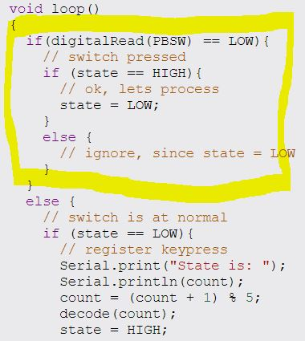
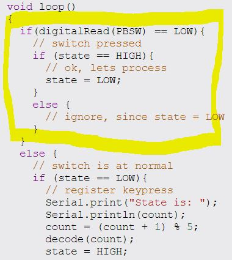

Arduino Assignment for Week 13
Arduino Assignment for Week 13
This page explains the process of me doing some simple program using Arduino
Step 1 for every circuit
- Setting up before Wiring circuit
- Q1
- Q2
- Q3
- This are codes I have learnt in class and tested. Further explaination of it is BELOW them.
- This are components given to me that I have tested. Further explaination is BELOW them.

 Keeping components safe so that it is not so easy to lose them.
Keeping components safe so that it is not so easy to lose them.-This is important as some of these parts are not cheap!!
 This is a simple setup to wire Vcc to the + rows and Ground to - rows.
This is a simple setup to wire Vcc to the + rows and Ground to - rows.
-This step is essential as a project may require powering many components and there is only one 5V pin on the arduino
555 Assignment
This part is the assignment I was tasked to do and how I tackled these questions
This is a simple cicuit wiring a pin and setting it to output to power the LED and wiring cathode to ground to complete it
 This is the circuit which I wired together using the components seen in the previous picture
This is the circuit which I wired together using the components seen in the previous picture
-This code is to make pin 6 High and Low which means the LED will on when it is High and off when it is low
This is the circuit which I wired together using the components seen in the previous picture


 This circuit is the same as Q1, it is repeated 3 times for 3 LEDs in total
This circuit is the same as Q1, it is repeated 3 times for 3 LEDs in total
Like Q1, the code is to make pin 6,7 and 8 High and Low in a sequence to create a pattern
 This is what it looks like in the physical circuit
This is what it looks like in the physical circuit
 

 This circuit is the similar as Q2, except now pin 4 is connected to a push button
This circuit is the similar as Q2, except now pin 4 is connected to a push button
In this circuit, pin 6 is set to an input, thus when the push button is pressed, a signal will be sent to the arduino through pin 6. Which the arduino will then turn pin 6,7 and 8 High in response
This is what it looks like in the physical circuit
Codes that I have tried out
If product is not working, it can be used to test whether the code or the component is not working.
Trying different components

 This is a Ultra Sonicsensor. It can be used to detect distance from it to activate something else.
This is a Ultra Sonicsensor. It can be used to detect distance from it to activate something else.
Q4
Step 6
Step 7